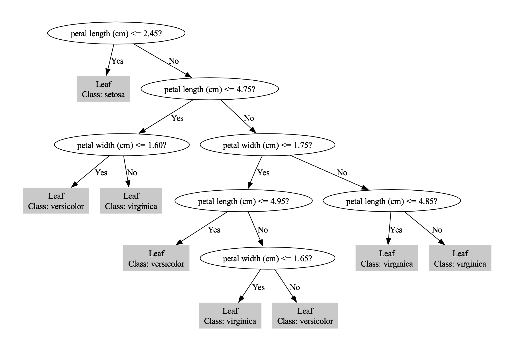

树模型与集成学习 · 07·03
C4.5决策树
C4.5 Decision Tree
C4.5决策树（C4.5 Decision Tree）
§1
方法概览
1.1 定义
C4.5 是 ID3 的改进版本。它用信息增益率代替单纯的信息增益，并支持连续特征、缺失值处理和后剪枝，因此比 ID3 更接近实际应用环境。
1.2 它主要解决什么问题
- 研究问题：如何在避免高基数特征偏倚的同时，构建更稳健的分类树。
- 适用任务：离散或连续特征混合的分类、教学型规则挖掘、可解释分类。
- 常见医学场景：结合实验室指标、评分量表和病史变量做疾病分型或风险类别判别。
1.3 直觉理解
C4.5 的思路和 ID3 类似，但它会额外追问一句：“这个特征虽然能把数据分得很细，但这种细分是不是只是因为它取值太多？”信息增益率就是用来约束这种偏差的。
§2
数学形式
2.1 核心公式
先计算信息增益：
$$ IG(S, A) = H(S) - H(S \mid A) $$
再计算特征 $A$ 的固有值：
$$ SI(S, A) = - \sum_{v \in \mathcal{V}(A)} \frac{|S_v|}{|S|} \log_2 \frac{|S_v|}{|S|} $$
信息增益率定义为：
$$ GR(S, A) = \frac{IG(S, A)}{SI(S, A)} $$
对于连续特征，C4.5 会搜索候选阈值 $c$，比较按 $X \le c$ 与 $X > c$ 划分后的增益率。
2.2 参数或统计量含义
- $IG(S, A)$：特征带来的不确定性下降。
- $SI(S, A)$：特征自身取值分布带来的“分裂复杂度”。
- $GR(S, A)$：兼顾有效性与复杂度后的分裂评分。
- 剪枝误差：用于控制树复杂度、减少过拟合。
2.3 关键假设
- 分类边界可由树状规则近似。
- 连续特征可通过阈值切分获得有效信息。
- 后剪枝有助于改善泛化能力。
§3
数据形式与输入输出
3.1 适合的数据形式
- 自变量类型：离散和连续变量均可。
- 因变量类型：二分类或多分类。
- 数据结构：宽表数据。
- 是否适合高维数据：可以，但仍可能不稳定。
- 是否适合缺失较多数据：比 ID3 更好，但大量缺失仍建议先系统处理。
- 是否适合删失数据：不适合。
- 是否适合重复测量数据：不直接适合。
3.2 示例表格
以 ICU 患者感染类型判别为例：
| Age | WBC | CRP | Ventilator | AntibioticHistory | InfectionClass |
|---|---|---|---|---|---|
| 72 | 13.2 | 88.0 | yes | yes | Bacterial |
| 51 | 6.8 | 14.3 | no | no | Viral |
| 63 | 11.0 | 52.5 | yes | no | Bacterial |
| 29 | 5.9 | 8.1 | no | no | Viral |
| 44 | 7.3 | 18.2 | no | yes | Other |
3.3 输入与产出
输入
- 输入数据：类别标签与混合型特征。
- 关键变量：候选切分点、最小样本阈值、剪枝策略。
- 需要预处理的内容：异常值检查、缺失处理、训练测试集划分。
产出
- 模型对象/统计结果：树结构、候选阈值、剪枝后树、分类规则。
- 参数估计：分裂规则、增益率排序、叶节点类别概率。
- 预测结果：类别标签与概率。
- 不确定性指标：验证集准确率、宏平均 F1、校准情况。
§4
适用场景
- 适合：混合型特征分类、需要规则解释、希望比 ID3 更稳健的场景。
- 不适合：极大规模数据、对最优预测性能要求远高于解释性的任务。
- 使用前需要特别检查的点：高基数特征、剪枝策略、类别不平衡。
§5
实现
常用包：
scikit-learn
import pandas as pd
from sklearn.tree import DecisionTreeClassifier
df = pd.read_csv("icu_infection.csv")
X = df"Age", "WBC", "CRP", "Ventilator", "AntibioticHistory"
X = pd.get_dummies(X, drop_first=True)
y = df["InfectionClass"]
# Python 生态里更常用 CART；这里给出接近 C4.5 训练流程的替代实现
fit = DecisionTreeClassifier(
criterion="entropy",
ccp_alpha=0.002,
min_samples_leaf=10,
random_state=42
)
fit.fit(X, y)
常用包：
RWeka
library(RWeka)
fit <- J48(InfectionClass ~ Age + WBC + CRP + Ventilator + AntibioticHistory, data = df)
pred <- predict(fit, newdata = df_test)
§6
结果如何解释
- 核心结果看什么：根节点分裂、连续变量阈值、剪枝后树深度、测试集表现。
- 每个主要参数如何解释：剪枝越强，树越简单，方差更低但偏差可能更高。
- 临床或医学意义如何表达：可用“当 CRP 超过某阈值且存在机械通气时，更倾向于某感染类别”来表达。
- 常见误读：增益率更高并不代表该特征单独就足以进行临床决策。
§7
推荐可视化
- 剪枝前后树结构对比图。
- 连续变量最佳阈值示意图。
- 混淆矩阵和每类召回率图。
7.1 图像示例
下图给出一个 C4.5 风格分类树的规则结构示意，适合说明连续特征阈值切分和逐层判别路径。

§8
优势、局限与常见坑
优势
- 比 ID3 更稳健。
- 能处理连续特征。
- 规则依然清晰。
局限
- 仍然属于单棵树，稳定性有限。
- 在复杂表格预测中常不如集成方法。
- 不同实现之间细节差异较大。
常见坑
- 把 scikit-learn 的 CART 结果直接当成严格 C4.5。
- 忽略剪枝。
- 把树阈值当成通用医学 cut-off。
§9
与相近方法的区别
- 和 ID3 的区别：C4.5 使用信息增益率，并支持连续特征、缺失值与后剪枝。
- 和 CART 的区别：CART 常用基尼指数并偏二叉分裂；C4.5 更强调增益率。
- 和随机森林的区别：随机森林牺牲部分可解释性来换取更强预测稳定性。
§10
医学研究中的典型应用
- 混合型临床指标的疾病分类。
- 医学教学中的规则树示例。
- 需要可解释路径的初步分型任务。
§11
相关方法
§12
参考资料
- Quinlan JR. C4.5: Programs for Machine Learning. Morgan Kaufmann; 1993.
- Witten IH, Frank E, Hall MA, Pal CJ. Data Mining: Practical Machine Learning Tools and Techniques. 4th ed. Morgan Kaufmann; 2016.
- Hornik K, Buchta C, Zeileis A. Open-source machine learning: RWeka package. Comput Stat. 2009;24:225-232.
— 黑盒词典 · 07·03 —